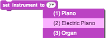
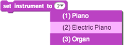

Tocar um instrumento
Para tocar as notas, escolha um instrumento e nota:

Tente este script. Clique no ator para tocar:


Tente este script. Clique no ator para tocar:

Adicionar blocos de notas para tocar uma escala curta: